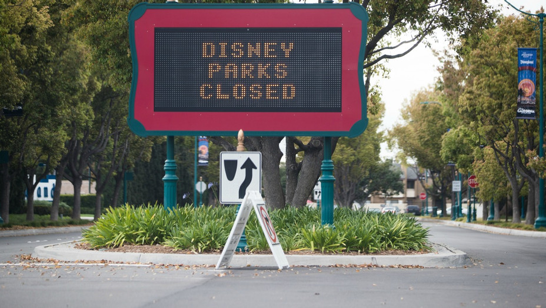

COVID-19’s devastating impact on states dependent on tourism
By Pat Elliott Nov 13, 2020
States who heavily rely on tourism have been deeply impacted by the Covid-19 pandemic. By March, the outbreak shut down all aspects of non-essential travel. With amusement parks, casinos, beach resorts, and bars shutting down for most of the spring and summer, massive layoffs followed.
Affected states had various approaches to reopening, but public fears about the virus and the lingering threat of additional shutdowns led to the tourism industry’s worst year in modern American history.
Brittany Miller, who represents Nevada’s 5th District in the State Assembly, believes that jobs will not return until consumer confidence does. “No company conferences are being planned to take place in our casinos until at least mid-2021, we will not see them return until we see a vaccine.”
With a second wave of COVID-19 imminent, it’s unlikely the tourism industry regains its footing until late 2021.